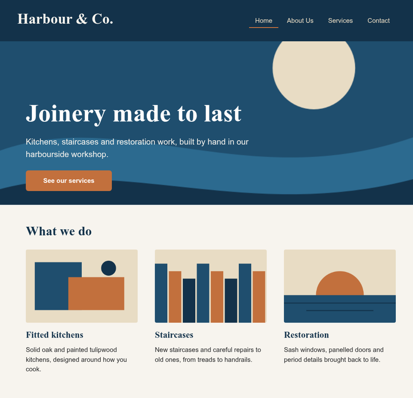

Contents
Starting WEBcreator
When you launch the app, the Startup Assistant appears. From it you can:
- Use a Design Template — start from one of the ready-made designs (pick a design, a colour scheme, untick any pages you don’t want, then open it).
- Start a New Site — begin from an empty page.
- Open a Saved Site — reopen a
.webcfile you made before.
Tip. Tick/untick “Show the Startup Assistant when the app opens” at the bottom to control whether it greets you each time.
Starting a new website
From a template
- In the Startup Assistant, click Use Design Template.
- Pick a design from the list on the left — a preview shows on the right.
- (Optional) Choose a colour scheme.
- (Optional) Untick any pages you don’t want.
- Click Open. Your site opens with its pages ready to edit.
Pages
Add, delete, rename and rearrange pages from the Site panel on the right.
- View a page: click it in the Site tree to open it on the canvas.
- Add a page: the New page button on the Site panel’s toolbar, then give it a name.
- Delete: select a page and click Delete page.
- Rename / properties: double-click a page (or use Page properties) to change its name and file name.
- Rearrange / nest: use Move up / down and Make sub-page / Promote to build the structure. The navigation bar follows the tree automatically.
Master pages
A master page holds things that appear on every page — your header and the navigation bar — so you write them once.
- Master pages are listed under the tree in the Site panel.
- Double-click a master to edit it; change the heading or logo there and it updates across the whole site.
- Assign a master per page in Page properties.
Assets & pictures
The Assets panel (left) is your picture library for the site.
- Browse… adds every picture from a folder; Open… adds one file; AI image… generates one.
- Drag a thumbnail onto the page to place it, or double-click it.
- Right-click a thumbnail to insert it or delete the asset from the library.
- Use the Picture tool to drop a picture frame; a picture inside a frame can be repositioned to fit.
Text
- Edit text: double-click any text to type over it.
- Creative Frame Text: drag to make a text frame, then type — text wraps inside the frame.
- Artistic Text: single lines that scale when you resize them (good for headings).
- Style text with the Colour, fonts and alignment controls.
Save often. Ctrl+S saves your
.webc file.Objects — nav bars, galleries, forms, maps…
The tool rail on the left lets you drop rich objects onto a page. Drag to place, then double-click to edit:
- Navigation Bar — lists your pages automatically.
- Photo Gallery — an animated slideshow that cycles through pictures with a fade (WEBcreator’s equivalent of a “slider”). Drop it, then choose the photos it shows.
- Google Map — an interactive map. Drop it, double-click, and type an address or place name; a pin shows where you’re based. No API key or account needed.
- Form — a contact form; Search Box; Share Buttons; YouTube Video; News Feed; Table; Button; and raw HTML Code for anything else.
Adding links
- Select some text, a button or a picture, then use the Link action on the toolbar.
- Link to another page in your site (it stays correct even if you rename the page), to a web address, or to an email (
mailto:).
Publishing your site
When the site reads the way you want, publish it as plain HTML and put it online.
- Preview any time with Preview (opens in your browser).
- Click Publish — choose Static (fixed width) or Responsive (scales to phones), and the files are written to a folder.
- Put that folder online with a free host:
- GitHub Pages — flat-free, no limits (great if your site is in a Git repo).
- Netlify Drop — drag the folder onto the page, no account needed to start.
- Cloudflare Pages — another free option.
- Want your own address like
www.your-name.co.uk? Buy a domain and point it at your host — each host has a “custom domain” setting.
Updating later. Change your site, Publish again, and re-upload the folder. Your web address stays the same.